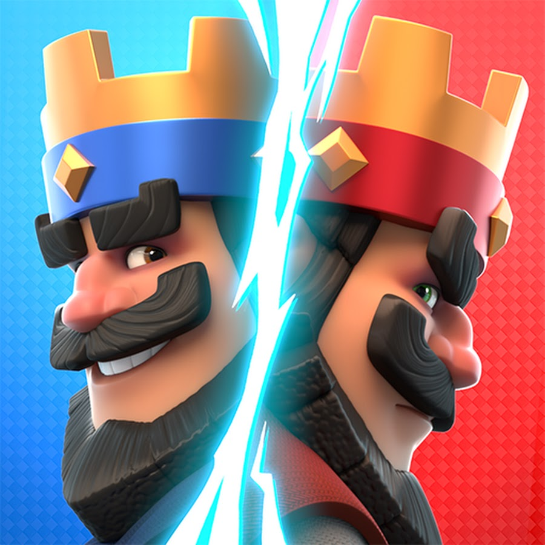
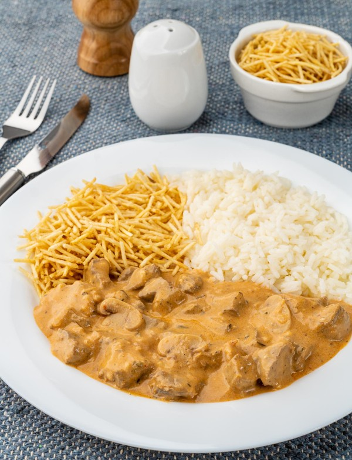
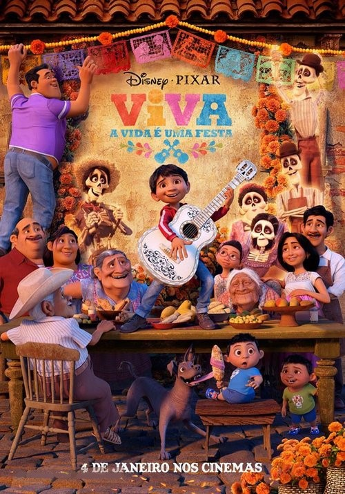
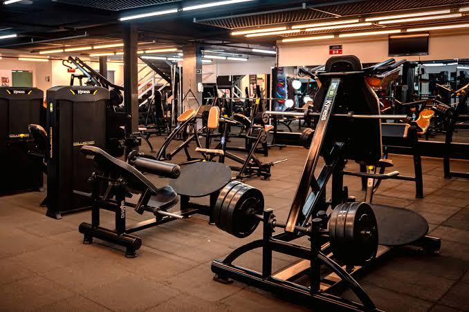

Jogo favorito: Clash Royale
Gosto de jogos em que precise montar uma estratégia.
Tenho 20 anos, moro em São Paulo e estudo Ciência da Computação na FIAP. Aqui mostro algumas coisas sobre mim:.

Gosto de jogos em que precise montar uma estratégia.

Strogonoff é meu prato preferido des de criança.

Amo esse filme, me emociono sempre pois lembro de momentos especiais.
Ouço essa música des de criança com o meu pai.

Me faz desestressar e me ajuda a manter o equilíbrio.
Falar em público para mim era muito difícil, hoje já é bem mais natural.